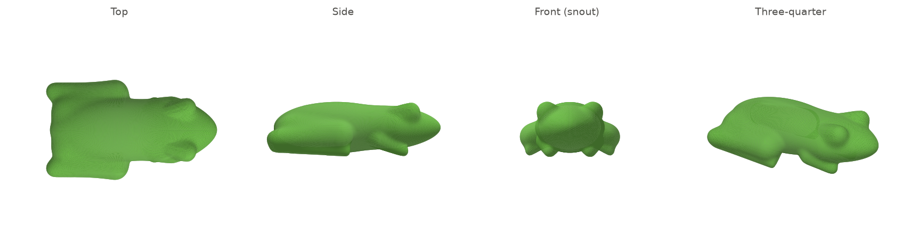
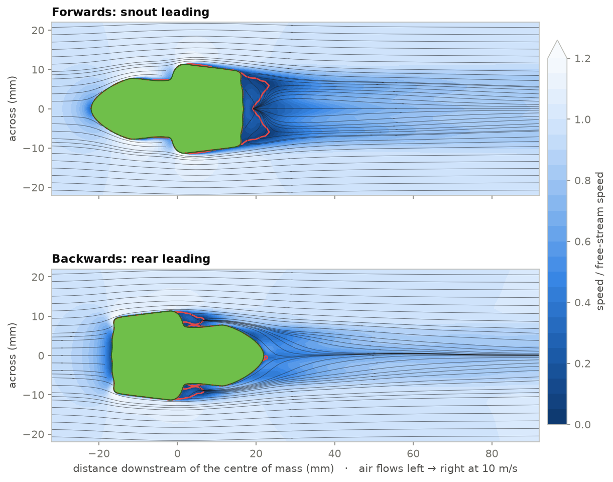
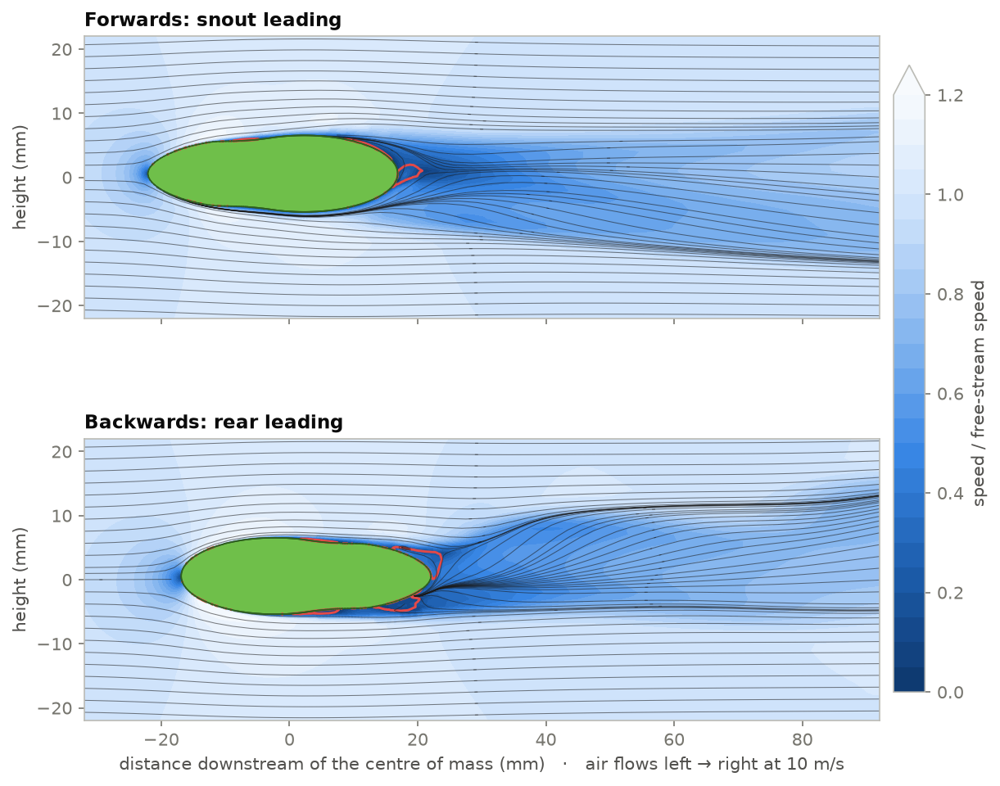
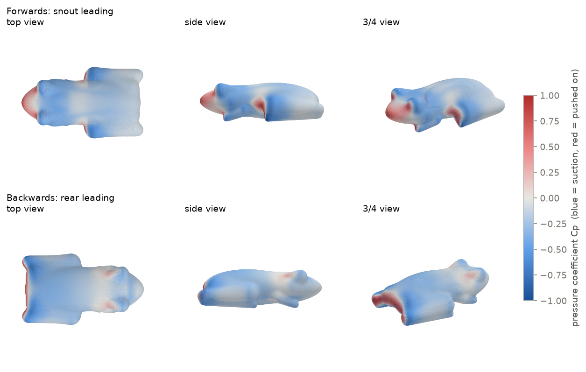

The answer: backwards, by about 9%
A tucked Pacific treefrog has % less drag flying rear first, so it would go about % faster backwards.
The folded legs make the back of the frog its widest, bluntest part, and the head narrows to a short snout. Rear first, that's the shape of a teardrop: blunt end leading, tapered end trailing. Snout first, the frog drags a flat, wide back end through the air, and that's what costs it.
That's for a frog that holds its attitude. It wouldn't for long: the stability runs show a tucked frog is unstable either way round and would start tumbling within a metre or two.
The frog
No public CT scan of P. regilla was at hand, so the frog is parametric. It's a smooth blend of ellipsoids and capsules in the tucked, water-conserving resting posture: limbs folded tight against the body. The parts are a trunk, a wedge-shaped head narrowing to a short rounded snout, protruding eyes, thighs folded forward to the knee, shanks folded back to the heel, feet tucked beneath, and forelimbs under the chin. The surface is closed and watertight (81,920 triangles) and scaled to a 40 mm snout–vent length, a typical adult.

| Quantity | Value | Note |
|---|---|---|
| Length (snout–vent) | 40.0 mm | typical adult |
| Width × height | 23.5 × 12.5 mm | across the folded knees |
| Volume | 5.25 cm³ | ≈ 5.5 g at tissue density (real adults: 3–5 g) |
| Frontal area A | cm² | identical in both orientations |
| Moment reference | volume centroid | uniform-density centre of mass |
Method
The frog sits in a virtual wind tunnel: 6 body lengths of air ahead, 12 behind and 4 to each side, so blockage is 0.2%. Air arrives at 10 m/s, a fast jump or the first metre of a fall. With a 40 mm body that gives a Reynolds number of . In this subcritical regime drag is dominated by where the flow separates and how big the wake is.
- Solver: OpenFOAM v2412
simpleFoam, steady incompressible RANS with the k-ω SST turbulence model. Second-order upwind convection for velocity. - Mesh:
snappyHexMesh, about 950k cells. Cells are 0.25 mm on the frog skin, with 3 prism layers (the first about 0.08 mm thick), 1 mm near the body and 2 mm through the wake box. Max non-orthogonality is 63°. - Boundaries: fixed-velocity inlet with 0.5% turbulence intensity, zero-pressure outlet, free-stream sides, and a no-slip frog with Spalding wall functions (valid at any y+).
- Forwards vs backwards: the same frog rotated 180°, meshed separately with identical settings (951,467 vs 951,586 cells).
- Stability: each orientation re-run with the airflow tilted 5° in pitch and 5° in yaw (700 iterations, restarted from the converged 0° solution, averaged over the last 300). The change in moment about the centre of mass shows whether the frog swings back into the wind or tips over.
- Convergence: forces averaged over the final iterations. The ± values are the standard deviation over that window, a measure of the residual unsteadiness of the separated wake.
Drag
Both orientations share the same frontal area, so their drag coefficients compare directly. Rear first is % lower. In both directions about four-fifths of the drag is pressure drag, from how the air separates and the size of the wake. The rest is skin friction.
Skin friction is actually slightly higher backwards ( vs ), because the air stays attached over more of the body. That penalty is about a tenth the size of the pressure-drag saving: forwards against backwards.
The flow
The view from above shows it most clearly. Snout first, the frog ends in a flat back face formed by the folded heels. The air can't turn that corner, so it separates and leaves a recirculation zone (red outline) as wide as the frog. The wake behind it stays about 20 mm wide for several body lengths.
Rear first, the flat heel face meets the air head-on. A blunt nose costs little when its edges are rounded, and the air accelerates around them (the near-white bands). It then follows the taper of the head and closes in behind the snout. The wake is a thin line.

From the side, the frog is flat-bellied and domed, so it also acts as a weak wing. Snout first it deflects its wake downward and gets a little lift (Cz = ). Rear first the wake kicks upward and the frog is pushed slightly down (Cz = ). Both forces are a quarter to a third the size of the drag.

Where the drag comes from
Colouring the skin by pressure shows where the push comes from. Red is air piling up against the frog (stagnation); blue is suction where air speeds past.

Integrating that pressure over the front and back halves of the body shows that rear-first wins at both ends:
- At the front: snout first, the nose is small, but the body steps out sharply at the knees halfway along. That step is a second, larger face pointing into the wind (the red patches on the flanks). Rear first, the whole flat heel face is red, but the strong suction around its rounded edges pulls forward and cancels much of it.
- At the back: snout first, the wide flat base sits in the separated, low-pressure wake and is pulled backward over its whole area. Rear first, the narrowing head lets the pressure partly recover before the air leaves.
Would it stay pointed that way?
Speed only matters if the frog keeps pointing the way it was launched. To test that, each orientation was tilted 5° nose-up (pitch) and 5° sideways (yaw). The question is whether the change in aerodynamic moment about the centre of mass pushes the leading end back into the wind, or further away.
Neither direction is stable. In all four cases a small tilt makes the frog tilt further. Snout first or rear first, a tucked frog would start to tumble almost as soon as it left the branch.
The reason is where the extra force acts. Tilt the frog and the air pushes on it sideways, and in every case that push is centred 6–12 mm ahead of the centre of mass. A push ahead of the balance point levers the leading end further off course. It's the same reason a dart needs its flights at the back and a rocket needs fins: a smooth body with nothing sticking out behind its centre of mass turns broadside to the flow. A tucked frog has no fins.
The two orientations are unstable in different ways. Snout first is the less unstable of the two in pitch: its neutral point sits 6 mm ahead of the centre of mass, against 12 mm rear first. Rear first is the less unstable in yaw (8 vs 10 mm). To make either direction stable, the centre of mass would have to move that far toward the leading end, a sixth to over a quarter of the body length.
The real centre of mass probably sits a little behind the volume centroid used here, with air-filled lungs up front and heavy thigh muscle at the back. That nudges things slightly in favour of rear first and against snout first, but nowhere near 10 mm.
How fast does it tip over?
The tilt grows exponentially. Using the frog's moment of inertia (from the mesh, at 4 g), the time for a wobble to grow by a factor of e is:
| Case | Neutral point vs CG | % of length | e-fold @ 10 m/s | e-fold @ terminal | Distance for 10× growth |
|---|---|---|---|---|---|
| Forwards · pitch | 6.3 mm ahead | 16% | 38 ms | 13 ms | 0.9 m |
| Forwards · yaw | 10.2 mm ahead | 25% | 65 ms | 23 ms | 1.5 m |
| Backwards · pitch | 11.6 mm ahead | 29% | 31 ms | 10 ms | 0.7 m |
| Backwards · yaw | 7.8 mm ahead | 19% | 72 ms | 23 ms | 1.6 m |
At terminal speed, a 1° wobble becomes 10° within one or two metres of travel. A real tucked frog wouldn't hold either attitude long enough to reach its top speed that way. It would tumble, and a tumbling frog spends much of its time broadside, with more frontal area and more drag than either clean orientation.
What would stabilise it is something behind the centre of mass to act as flights. A leaping frog trailing its extended hind legs is exactly that, which is a good reason to think a jumping frog flies snout first. That posture isn't simulated here.
The drop test
Feed the CFD drag coefficients into Newton's second law and drop two 4 g frogs from a 40 m branch, one snout-down and one rear-down. Each is made to hold its attitude, which a real frog wouldn't, and the falls use v(t) = vt·tanh(g t / vt).
This assumes Cd holds as the frog speeds up past the 10 m/s it was simulated at. That's reasonable in this Reynolds-number range, where the coefficient changes only slowly. Real frogs that fall spread their limbs, which roughly triples their frontal area and cuts terminal velocity to under 10 m/s.
Caveats
- The frog is parametric, not scanned. Its proportions come from typical adults, but a real tucked frog varies. The result rests on one robust feature, though: the folded legs make the rear wider and blunter than the head.
- Turbulence model. At Re ≈ 27,000 a real boundary layer is mostly laminar, and k-ω SST treats it as turbulent throughout. Laminar flow separates earlier, which would likely raise both drag coefficients. Absolute values are therefore uncertain. The ranking comes from gross shape and wake size, so it's more trustworthy than the exact numbers. A transition model or LES would tighten them.
- Steady solver, unsteady wake. Separated wakes shed vortices. The steady solution leaves about ±1% wobble in Cd, far smaller than the 16% gap.
- One mesh, one speed. There's no grid-refinement study (950k cells, 0.25 mm at the skin), and only 10 m/s was simulated. Terminal velocity (Re ≈ 80,000) is still subcritical, so Cd should change little, but that's extrapolated.
- Stability is static and small-angle. One 5° point per axis gives the initial tendency, not the full tumbling motion. It also depends on where the centre of mass really is, which is taken here as the volume centroid.
Reproduce it
Everything is in the repository: the geometry generator, the case generator, the Docker run scripts, the force histories and the post-processing. With Docker and Python 3:
python frog_geometry.py # frog STL + properties
python make_cases.py --mesh-only # mesh dictionaries for both orientations
./docker_of.sh ./run_mesh.sh cfd/mesh_forward
./docker_of.sh ./run_mesh.sh cfd/mesh_backward
python make_cases.py fwd_a0 bwd_a0
./docker_of.sh ./run_solve.sh cfd/fwd_a0 cfd/bwd_a0
./prepare_restart.sh # 5° pitch/yaw cases from the 0° solutions
./docker_of.sh ./run_restart.sh cfd/fwd_p5 cfd/bwd_p5 cfd/fwd_y5 cfd/bwd_y5
python post_dicts.py fwd_a0 bwd_a0
./docker_of.sh 'for c in fwd_a0 bwd_a0; do postProcess -case cfd/$c -dict system/postSample -latestTime; done'
python analyze.py fwd_a0 bwd_a0
python drag_split.py && python stability.py
python make_figures.py && python export_web.pyOn an Apple M1 (8 MPI ranks in Docker) each 0° case takes about 45 minutes.